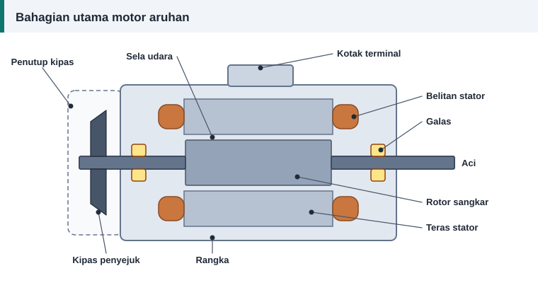

Asas motor
Apa Itu Lilitan Semula Motor dan Bila Ia Diperlukan
Motor elektrik jarang rosak sekali gus. Biasanya galas mula berbunyi, suhu naik sedikit demi sedikit, dan akhirnya belitan kuprum di dalam stator hangus. Apabila itu berlaku, anda ada dua pilihan: beli motor baharu atau lilit semula belitannya. Artikel ini menerangkan pilihan kedua dari asas.


Maksud lilitan semula
Lilitan semula (dalam bahasa Inggeris rewinding, di bengkel sering disebut gulung semula) ialah kerja menanggalkan belitan lama daripada teras motor dan menggantikannya dengan gegelung dawai kuprum berenamel yang baharu. Teras besi, rangka, rotor dan aci dikekalkan. Hanya bahagian yang membawa arus dan penebatnya diganti.
Matlamatnya bukan mereka bentuk motor baharu. Matlamatnya ialah menyalin belitan asal setepat mungkin: bilangan lilitan yang sama, saiz dawai yang sama atau sedikit lebih besar, rentang gegelung yang sama dan sambungan yang sama.
Bahagian motor yang perlu anda kenal
- Stator ialah bahagian pegun. Terasnya diperbuat daripada kepingan keluli nipis yang ditindan, dan mempunyai alur tempat gegelung diletakkan.
- Belitan stator ialah gegelung dawai kuprum berenamel di dalam alur. Inilah yang diganti semasa lilitan semula.
- Rotor ialah bahagian berpusing. Kebanyakan motor aruhan menggunakan rotor sangkar tupai yang tidak mempunyai dawai berlilit.
- Sela udara ialah ruang sempit antara stator dan rotor.
- Galas menyokong aci supaya rotor berpusing tepat di tengah lubang stator.
- Kipas dan penutup kipas meniup udara ke atas rangka untuk menyejukkannya.
- Kotak terminal ialah tempat hujung belitan disambung kepada bekalan.
Tanda belitan sudah rosak
- Bau hangus, atau varnis kelihatan hitam dan rapuh.
- Pemutus litar atau geganti beban lampau terpelantik sebaik sahaja motor dihidupkan.
- Rintangan penebatan ke badan motor sangat rendah apabila diuji.
- Rintangan tiga fasa tidak seimbang.
- Motor berdengung tetapi tidak berpusing, atau arus satu fasa jauh lebih tinggi daripada fasa lain.
Tanda-tanda ini juga boleh berpunca daripada masalah lain seperti kapasitor rosak pada motor satu fasa, galas tersekat atau bekalan hilang satu fasa. Uji dahulu sebelum membuat keputusan. Lihat ujian rintangan penebatan dan punca belitan motor terbakar.
Proses secara ringkas
- Rekod data plat nama dan data belitan asal.
- Tanggalkan belitan lama tanpa merosakkan teras.
- Bersihkan alur dan pasang penebat alur baharu.
- Lilit gegelung baharu mengikut data asal dan masukkan ke dalam alur.
- Sambung, ikat dan uji, kemudian celup varnis dan keringkan.
- Pasang semula motor dan jalankan ujian akhir.
Huraian penuh setiap langkah ada dalam panduan langkah demi langkah.
Bila lilitan semula berbaloi
Lilitan semula biasanya berbaloi untuk motor bersaiz sederhana dan besar, motor khas yang sukar dicari ganti, dan motor yang teras serta bahagian mekanikalnya masih baik. Untuk motor kecil yang murah, harga motor baharu kadangkala hampir sama dengan kos baik pulih. Perbandingan kos dibincangkan dalam lilit semula atau ganti baharu.
Peranan pengiraan
Jika data asal lengkap, anda hanya perlu menyalin. Pengiraan diperlukan apabila data hilang, apabila saiz dawai asal tiada di pasaran, atau apabila voltan motor hendak ditukar. Kalkulator lilitan semula di laman ini membantu dalam ketiga-tiga keadaan itu.
Rujukan dan bacaan lanjut
Artikel berkaitan
Langkah Demi Langkah Melilit Semula Motor Tiga Fasa
Daripada menanggalkan belitan lama hingga ujian akhir, ikuti sepuluh langkah melilit semula stator motor tiga fasa dengan kemas, selamat dan mengikut amalan baik bengkel.
Cara Membaca Plat Nama Motor Elektrik
Plat nama memberi semua data yang diperlukan sebelum melilit semula: voltan, arus, laju, sambungan dan kelas penebat. Ketahui maksud setiap ruangan satu per satu.
Lilit Semula atau Ganti Baharu? Cara Membuat Keputusan
Kos baik pulih hanya sebahagian daripada kiraan. Bandingkan harga, keadaan teras, kecekapan dan kos elektrik sepanjang hayat untuk memutuskan sama ada motor patut dililit semula.